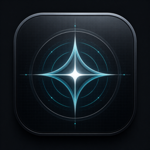
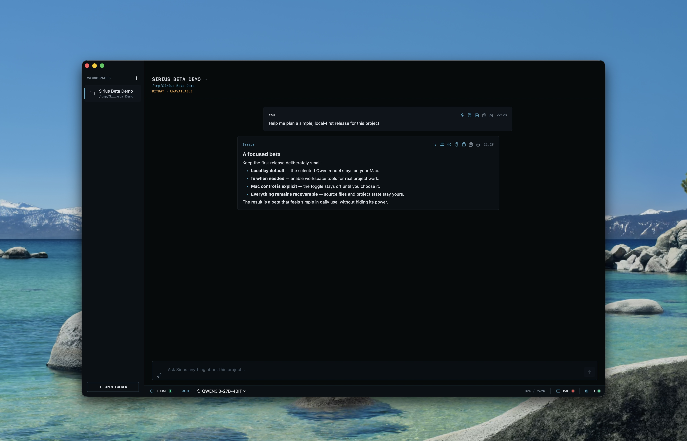
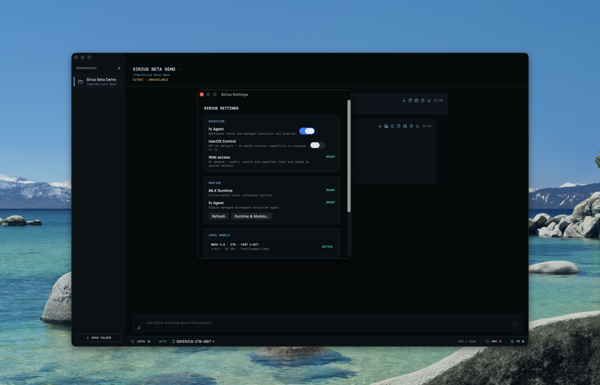

Fast local Qwen
Streaming Qwen 3.8 through MLX Serve on Apple Silicon, with model setup and runtime health owned by Sirius.

SIRIUSPIXEL RECORDS LOCAL AI Get the beta0.6.11 BETA 1 // APPLE SILICON
Sirius gives every project its own constellation of local AI threads—with local model inference, reusable creative context, native tools, and explicit control over connected apps.
01 // WHAT SIRIUS DOES
Start a clean thread without losing the project. Keep it private, or let it share the useful memory and capabilities of its constellation.
Streaming Qwen 3.8 through MLX Serve on Apple Silicon, with model setup and runtime health owned by Sirius.
Codex-style project threads. Create a new star for a fresh start, then choose whether its memory stays private or shared.
KITKAT and your read-only ChatGPT archive provide cited context only when it is useful—without silently merging every thread.
Sirius handles project files, commands and creative handoffs directly. Optional fx execution remains available for existing workflows.
Research in a Sirius-owned browser profile, separate from your personal browser state and enabled per session.
Build scene direction from references, make music through Pixel Music, prepare Suno prompts, or search and prepare sounds with source provenance.
02 // THE REAL PRODUCT
The constellation is not a metaphor pasted onto a chat app. It is how Sirius organizes real project threads, local models, memory scopes, tools, and visible control boundaries.

03 // ELASTIC ENGINE RESEARCH
The separately gated research engine explores selecting sparse-model components from storage and reusing them within a memory budget. Everyday local chat uses the managed MLX Serve runtime; elastic research is not the default production path.
04 // ONE LOCAL CREATIVE SYSTEM
Sirius is the conversational surface. It sends typed, reviewable handoffs to the specialist app that owns the result—never an invisible cross-app mutation.

05 // EXPLICIT CONTROL
fx and macOS Control are separate switches. Enable the agent without handing it your Desktop, then grant Mac control only for the turns that truly need it.
06 // LOCAL BY DESIGN
Sirius is built for people who want a capable AI collaborator without turning every thought into a cloud workflow.
Local inference, deliberate tools, recoverable state. The system stays understandable even as it becomes more powerful.
0.6.11 BETA 1 // AVAILABLE NOW
First launch: open Sirius normally. The notarized app will guide you through local runtime and model setup.
New in 0.6.11: choose Lightning on TensorFold or MLX Serve, or use Nano Omni for text and image work. More dependable cancellation, model switching and saved tool evidence keep creative workflows moving. Bonsai, Qwen and your connected apps remain available.
Release notes and SHA-256 →